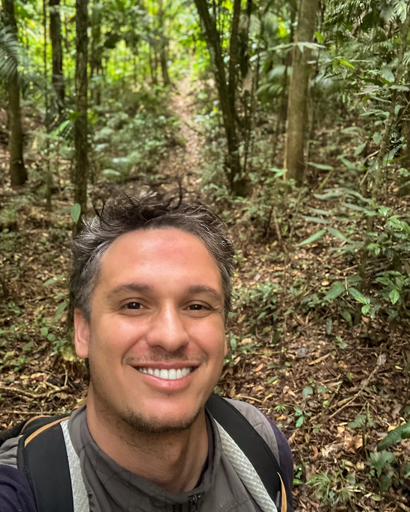

Equipe
Sou uma bióloga evolutiva, com doutorado pelo IB-USP, e pós-doutorados na Oregon State University, Oklahoma State University e University of California Riverside. Tenho muito interesse em entender a evolução de fenótipos complexos, como o sistema músculo-esquelético de anfíbios anuros, que são fenótipos multivariados (compostos de vários caracteres) e influenciados por uma gama de efeitos genéticos e ambientais. Fenótipos complexos são especiais por influenciarem desempenhos funcionais, como a aceleração de salto ou velocidade de corrida, e consequentemente, afetarem a aptidão média das populações. Desde agosto de 2025 estou atuando como Jovem Pesquisadora Fapesp no Departamento de Biologia da Faculdade de Filosofia, Ciências e Letras de Ribeirão Preto da Universidade de São Paulo (FFCLRP-USP). Atualmente, estou à procura de alunos de Iniciação Científica, Mestrado e Doutorado para trabalharem no projeto JP que estou liderando, focado na evolução da morfologia e do desempenho de natação de espécies de anuros da Mata Atlântica. Além de apreciar ciência, também sou apreciadora de música, literatura, artes, filosofia e esportes. E sou mãe de dois filhos lindos, Caetano e Dante.
Fábio P. de Sá
Colaborador
Zoólogo interessado em processos evolutivos, conectando frentes de comportamento e diversificação em anfíbios. Atua hoje como Pesquisador de Pós-Doutorado no Departamento de Biodiversidade e no Centro de Pesquisa em Biodiversidade e Mudanças do Clima (CBioClima) da UNESP em Rio Claro, SP. É Bacharel e Licenciado em Ciências Biológicas e possui Mestrado e Doutorado em Zoologia, todos pela UNESP de Rio Claro. Sua trajetória acadêmica inclui Pós-Doutorado na UNICAMP (Campinas, SP) e experiências internacionais como Pesquisador Visitante na Cornell University (Ithaca, NY, Estados Unidos) e no Museo Nacional de Ciencias Naturales (Madrid, Espanha).
Vanessa K. Verdade
Colaboradora
Zoóloga formada em Bacharelado e Licenciatura em Ciências Biológicas pela Universidade de São Paulo. Fez mestrado, doutorado e pós-doutorado na área de Zoologia na mesma Universidade. Assumiu o cargo de docente na Universidade Federal do ABC em 2010 e virou mãe da Rafa em 2011. Atualmente é Professora Associada na UFABC, parte do colegiado do Bacharelado em Ciências Biológicas e vice-coordenadora do curso de pós-graduação em Evolução e Diversidade (PPG-EVD, Capes nota 5). É membro do núcleo estratégico em pesquisa "Enfrentamento e Soluções para a Crise da biodiversidade", que é interdisciplinar e reúne pesquisadores da área das ciências biológicas, matemática e engenharias. É Editora Associada da revista Phyllomedusa, faz parte do Núcleo de extensão em Evolução e Diversidade (NExt-EVD) e é coordenadora adjunta do Projeto de extensão "Guia dos entusiastas da ciência" (GEC-UFABC). Desenvolve projetos na linha de Evolução, sistemática e conservação de anuros, focada principalmente em morfologia comparada e o efeito de variáveis ambientais sobre a evolução morfológica e diversificação de linhagens Neotropicais.

 ---->
---->